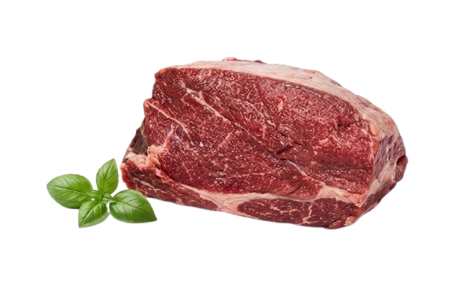

Mapa CarneCerta
Potencia de sabor para panela
A paleta trabalha muito bem em coccoes umidas, com sabor marcante e excelente leitura de custo-beneficio.

Ideal para • panela • ensopados • desfiar
Maciez
2/5
Depende da coccao
Gordura
3/5
Equilibrada
Sabor
4/5
Intenso
Abrir recomendador inteligente
Paleta
Corte dianteiro com personalidade forte, otimo para receitas reconfortantes e preparos com molho.
A paleta combina sabor alto com boa resposta em cozimento lento. E uma otima escolha para panela, carnes desfiadas e receitas em que o molho faz parte do resultado final.
Ensopados densos
Bom rendimento
Textura para desfiar
4.7
Favorita da panela
Otimo custo-beneficio para preparos umidos e cozimentos prolongados, com sabor forte e textura que evolui bem.
Ideal para
Dica do açougueiro IA
Corte em cubos medios e sele antes da coccao. Isso melhora a caramelizacao e deixa o molho com sabor mais profundo.